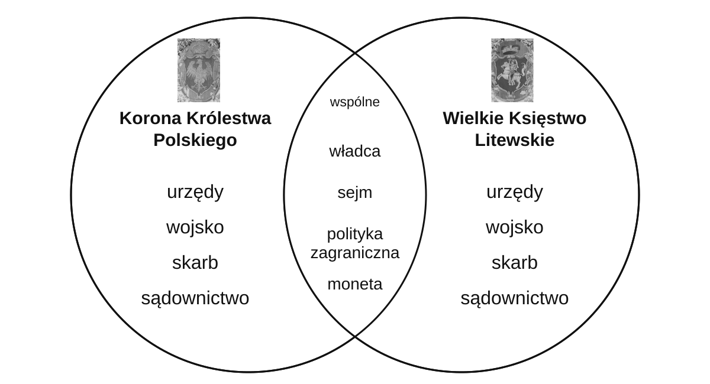

Rzeczpospolita Obojga Narodów — model nauczyciela
Unia realna zawarta w Lublinie dnia 1 lipca 1569 roku.
Środek: władca, sejm, polityka zagraniczna, moneta. Boki: odrębne urzędy, wojsko, skarb i sądownictwo.

Moneta miała być wspólna; różne mennice i znaki. Model pokazujemy dopiero po samodzielnej pracy.
Herby: wierne kadry z arrasu z Cererą,1560, domena publiczna (ZPE Rf9iPk0dCMVVV). Diagram objaśniający, nie źródło z XVI wieku.